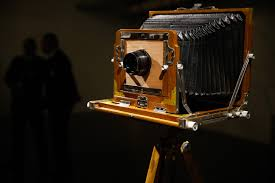

RamonTI
Localização

- Rua marechal rondon, 11
- Vila do açai
- Rio de janeiro - RJ
Contato direto
- Fone: (00) 99999-9999
- Email: contato@outlook.com
- Skype: login.skype
Formulário para contato
Como conquistar clientes na era digital?
Conheça o seu público - Este é o primeiro ponto para o desenvolvimento de qualquer estratégia de marketing. É preciso saber quem são os consumidores da sua marca, entender seu comportamento, preferências e identificar o padrão de compra. A definição deste perfil permitirá criar abordagens de venda com estratégias e linguagem mais adequadas.
Invista em otimização - Com a alta concorrência e o grande volume de conteúdo disponível no meio digital, é fundamental investir na visibilidade do seu negócio.
Ofereça conteúdo de qualidade - Na era do conteúdo digital, disponibilizar informações completas e relevantes sobre produtos e serviços é fundamental para impulsionar a geração de leads qualificados.
Curiosidade do mundo da Tecnologia
-

Mozilla e sua "raposa"
1. O mascote do Mozilla Firefox não é uma raposa Ao contrário do que sugere o nome, o animal que aparece no logo do navegador Firefox não é uma raposa, mas sim um panda vermelho. Leia mais »
-
A origem da palavra “robô”
2. A origem da palavra “robô” remete a trabalho forçado Quem cunhou o termo "robô" foi o escritor, jornalista e filósofo checo Karel Capek, na peça teatral de sucesso Rossum's Universal Robots, em 1920. Leia mais »
-

A primeira câmera do mundo
3. A primeira câmera do mundo levou oito horas para tirar uma foto A primeira fotografia da história foi feita em 1826, capturando a vista de uma janela na região de Le Gras, na França. Leia mais »